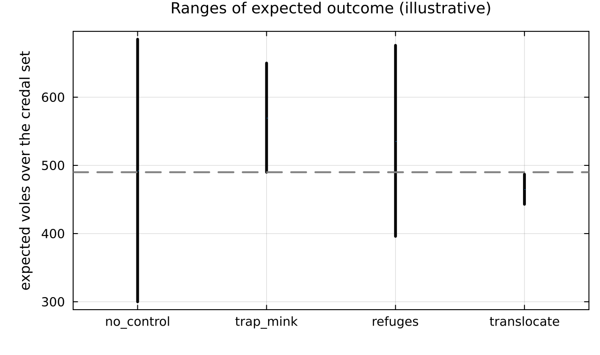

Uncertain beliefs: sets of priors and scenarios
Simon Frost
- Motivation
- The problem
- A credal set
- Rules that choose one action
- Rules that return a set
- The value of information under a set of priors
- Scenarios without probabilities
- Robustness metrics from the same pieces
- How far apart are the experts?
- What to take away
- Next
Motivation
A single probability for each state is often more than anyone can honestly supply. Experts disagree, models disagree, and for some states nobody will name a number. Two weaker forms of belief cover these cases.
- A
CredalSetis a set of priors: all the probability vectors that are mixtures of a few stated ones. It says “the probabilities are somewhere in here”. - A
ScenarioSetis a list of states held to be possible, with no probabilities.
With a set of priors each action has a range of expected outcomes instead of one, and several rules compete: some pick one action, others return the set of actions that cannot be ruled out. The value of information also changes character, and can be negative. This vignette goes through all of that on one table.
The problem
The problem is the water-vole colony of the vignette on decision rules. Mink may be absent, transient or established, and the manager can do nothing, trap mink, build refuges, or translocate part of the colony. Outcomes are water voles alive in five years. All numbers are illustrative.
using DecisionAnalysis
include(joinpath("..", "_common.jl"))
using Plots
actions = [:no_control, :trap_mink, :refuges, :translocate]
states = [:absent, :transient, :established]
payoff = PayoffTable(actions, states,
[800 400 50; 700 600 300; 760 480 200; 500 450 420])
payoffPayoffTable{Int64}: 4 actions × 3 states
| action | absent | transient | established |
|---|---|---|---|
no_control | 800 | 400 | 50 |
trap_mink | 700 | 600 | 300 |
refuges | 760 | 480 | 200 |
translocate | 500 | 450 | 420 |
Three ecologists give three different probabilities for the mink (illustrative).
experts = [:optimist => [4 // 5, 1 // 10, 1 // 10],
:moderate => [2 // 5, 2 // 5, 1 // 5],
:pessimist => [1 // 10, 1 // 2, 2 // 5]]
md_table(vcat("expert", states), [vcat(n, exact.(q)) for (n, q) in experts])| expert | absent | transient | established |
|---|---|---|---|
optimist | 4/5 | 1/10 | 1/10 |
moderate | 2/5 | 2/5 | 1/5 |
pessimist | 1/10 | 1/2 | 2/5 |
Taken one at a time, each expert has an expected-utility choice and an expected gain over no control.
md_table(["expert", "expected-utility choice", "its expected gain over no control", "EVPI"],
[begin
single = DecisionProblem(payoff, q; baseline=:no_control)
[n, first_choice(decide(single, MaxExpectedUtility())),
maximum(expected_gain_over_baseline(single)), evpi(single)]
end
for (n, q) in experts])| expert | expected-utility choice | its expected gain over no control | EVPI |
|---|---|---|---|
optimist | no_control | 0 | 57 |
moderate | trap_mink | 90 | 64 |
pessimist | trap_mink | 190 | 58 |
A credal set
The credal set is the convex hull of the three priors: every weighted average of them is also in the set.
credal = CredalSet(states, last.(experts))
problem = DecisionProblem(payoff, credal; baseline=:no_control)DecisionProblem(4 feasible of 4 actions × 3 states, CredalSet)Each action now has a lower and an upper expected count over the set. The expectation is linear in the prior, so both ends are reached at one of the three stated priors.
lower = aggregate(LowerExpectation(), problem)
upper = aggregate(UpperExpectation(), problem)
md_table(["action", "lower expectation", "upper expectation"],
[[a, l, u] for (a, l, u) in zip(actions, lower, upper)])| action | lower expectation | upper expectation |
|---|---|---|
no_control | 300 | 685 |
trap_mink | 490 | 650 |
refuges | 396 | 676 |
translocate | 443 | 487 |
mid = Float64.(lower .+ upper) ./ 2
half = Float64.(upper .- lower) ./ 2
plt = scatter(1:4, mid; yerror=half, xticks=(1:4, String.(actions)), legend=false,
markersize=0, linewidth=3, xlims=(0.5, 4.5),
ylabel="expected voles over the credal set",
title="Ranges of expected outcome (illustrative)")
hline!(plt, [Float64(maximum(lower))]; linestyle=:dash, color=:gray)
png_figure(plt)
The dashed line is the largest lower expectation. It is used by two of the rules below.
An expectation under a credal set is not defined, and the package says so instead of picking a prior:
try
decide(problem, MaxExpectedUtility())
catch err
print(sprint(showerror, err))
endBeliefFormError: Expectation is not defined for a CredalSet: it needs a single prior; use LowerExpectation, UpperExpectation or AlphaMaxmin over the setRules that choose one action
Γ-maximin maximises the lower expectation: the best guaranteed expected outcome.
gamma = decide(problem, GammaMaximin())
first_choice(gamma), maximum(gamma.scores)(:trap_mink, 490//1)α-maxmin mixes the lower and upper expectations, with weight α on the lower one. AlphaMaxmin(1) is Γ-maximin and AlphaMaxmin(0) maximises the upper expectation. (The index of Hurwicz goes the other way: it puts its weight on the best state.)
md_table(["α (weight on the lower expectation)", "choice"],
[[exact(α), decide(problem, DecisionRule(AlphaMaxmin(α))).chosen]
for α in 0:(1 // 4):1])| α (weight on the lower expectation) | choice |
|---|---|
| 0 | no_control |
| 1/4 | trap_mink |
| 1/2 | trap_mink |
| 3/4 | trap_mink |
| 1 | trap_mink |
The gain over no control has a range too. Under a credal set expected_gain_over_baseline returns the lowest and the highest expected gain of each action over the set, as a named tuple (lower, upper).
gain = expected_gain_over_baseline(problem)
md_table(["action", "lowest expected gain over no control", "highest expected gain"],
[[a, l, u] for (a, l, u) in zip(actions, gain.lower, gain.upper)])| action | lowest expected gain over no control | highest expected gain |
|---|---|---|
no_control | 0 | 0 |
trap_mink | -35 | 190 |
refuges | -9 | 96 |
translocate | -198 | 143 |
Trapping gains between −35 and 190 voles over no control, depending on which prior in the set is right. Every intervention has an expected gain that is negative under the optimist’s prior and positive under the pessimist’s: whether to intervene at all is what the experts disagree about.
Rules that return a set
Three rules do not pick a winner. They discard the actions that can be ruled out and return the rest.
- E-admissible: optimal under at least one prior in the set.
- Maximal: no other action is better under every prior in the set.
- Interval dominance: its upper expectation reaches the largest lower expectation.
Every E-admissible action is maximal, and every maximal action passes interval dominance, so the sets are nested.
sets = ["E-admissible" => decide(problem, EAdmissible()),
"maximal" => decide(problem, Maximal()),
"interval dominance" => decide(problem, IntervalDominance())]
md_table(["rule", "actions kept"], [[n, r.chosen] for (n, r) in sets])| rule | actions kept |
|---|---|
| E-admissible | no_control, trap_mink, refuges |
| maximal | no_control, trap_mink, refuges |
| interval dominance | no_control, trap_mink, refuges |
Translocation is ruled out by all three: its best expected outcome over the set, 487 voles, is below the 490 that trapping guarantees.
E-admissibility is not a check of the stated priors
No expert, taken alone, chooses refuges: the table above shows the optimist choosing no control and the other two trapping. Refuges are E-admissible all the same, because they are optimal under a prior between the experts. decide finds such a prior by linear programme and returns it, with the weights on the stated priors that produce it.
e = decide(problem, EAdmissible())
md_table(vcat("action", "weights on the three experts", "witness prior"),
[[a, join(exact.(e.details.weights[a]), ", "),
join(exact.(e.details.witnesses[a]), ", ")] for a in e.chosen])| action | weights on the three experts | witness prior |
|---|---|---|
no_control | 46/55, 9/55, 0 | 202/275, 41/275, 32/275 |
trap_mink | 22/35, 13/35, 0 | 114/175, 37/175, 24/175 |
refuges | 22/35, 13/35, 0 | 114/175, 37/175, 24/175 |
witness = e.details.witnesses[:refuges]
at_witness = DecisionProblem(payoff, witness)
aggregate(Expectation(), at_witness), decide(at_witness, MaxExpectedUtility()).chosen(Rational{BigInt}[4288//7, 624, 624, 16746//35], [:trap_mink, :refuges])At that prior refuges tie for the best. Checking only the three stated priors would have missed them.
The same question by another solver
The linear programme behind E-admissibility is an ordinary JuMP model, and the package states it once: eadmissibility_model returns it, with its variables (the weights λ on the stated priors and the slack t).
program = eadmissibility_model(problem, :refuges)
print(program.model)Max t
Subject to
λ[1] + λ[2] + λ[3] = 1//1
-9//1 λ[1] + 46//1 λ[2] + 96//1 λ[3] - t ≥ 0//1
26//1 λ[1] - 44//1 λ[2] - 94//1 λ[3] - t ≥ 0//1
-t ≥ 0//1
189//1 λ[1] + 72//1 λ[2] - 47//1 λ[3] - t ≥ 0//1
λ[1] ≥ 0//1
λ[2] ≥ 0//1
λ[3] ≥ 0//1The action is E-admissible exactly when the largest slack is zero. There are three ways to solve the model, chosen by the optimizer keyword of decide (and of solve_program).
By default nothing needs to be installed: the package reads the matrix form of the model and solves it with its own simplex method in exact rational arithmetic.
exact_route = decide(problem, EAdmissible())
exact_route.chosen, exact_route.details.route([:no_control, :trap_mink, :refuges], :internal)Any floating-point solver can be used instead, here HiGHS. A floating-point solution is not an exact answer, so the package does not return it as one. It rounds the solution to rationals, tidies the weights so that they are nonnegative and sum to one, and then checks in exact arithmetic that the action really is optimal under the prior those weights give. Only a witness that passes is returned.
using HiGHS
float_route = decide(problem, EAdmissible(); optimizer=HiGHS.Optimizer)
float_route.chosen, float_route.details.route([:no_control, :trap_mink, :refuges], :float_optimizer)md_table(["action", "weights, default exact route", "weights, HiGHS then verified",
"answer is exact"],
[[a, join(exact.(exact_route.details.weights[a]), ", "),
join(exact.(float_route.details.weights[a]), ", "),
float_route.details.exact[a]] for a in float_route.chosen])| action | weights, default exact route | weights, HiGHS then verified | answer is exact |
|---|---|---|---|
no_control | 46/55, 9/55, 0 | 46/55, 9/55, 0 | yes |
trap_mink | 22/35, 13/35, 0 | 22/35, 13/35, 0 | yes |
refuges | 22/35, 13/35, 0 | 22/35, 13/35, 0 | yes |
The two routes agree on the set. The witnesses need not be the same prior, because an action can be optimal under many priors, but each one has been verified exactly. The check made on the HiGHS witness for refuges, written out:
λ = float_route.details.weights[:refuges]
mixture = sum(λ[k] .* extreme_points(credal)[k] for k in eachindex(λ))
eu = payoff.Q * mixture
all(>=(0), λ), sum(λ) == 1, eu[3] == maximum(eu)(true, true, true)details.exact says how far each answer can be relied on. A “yes” from the floating-point route is exact, because its witness was verified. A “no” is exact when the rounded primal and dual solutions of the programme certify its optimum, which is then strictly below zero; that is the case for translocation here. A “no” that cannot be certified in that way is the solver’s verdict to its tolerance, and is marked as not exact.
md_table(["action", "E-admissible", "answer is exact"],
[[a, a in float_route.chosen, float_route.details.exact[a]] for a in actions])| action | E-admissible | answer is exact |
|---|---|---|
no_control | yes | yes |
trap_mink | yes | yes |
refuges | yes | yes |
translocate | - | yes |
If a rounded witness fails the exact check, the package throws ExactVerificationError and returns nothing unverified. A third route is an exact solver such as CDDLib.Optimizer{Rational{BigInt}}, which solves the rational model itself:
using CDDLib
decide(problem, EAdmissible(); optimizer=CDDLib.Optimizer{Rational{BigInt}}).chosen3-element Vector{Symbol}:
:no_control
:trap_mink
:refugesThe garbling test, deficiency and the EVPI envelope below take the same keyword.
The three sets can differ
Add a fifth action: half the traps and half the refuges, which does slightly worse in every state than the average of the two full measures.
payoff5 = PayoffTable(vcat(actions, :half_measures), states,
vcat(payoff.Q, [725 535 245]))
problem5 = DecisionProblem(payoff5, credal; baseline=:no_control)
md_table(["rule", "actions kept"],
[["E-admissible", decide(problem5, EAdmissible()).chosen],
["maximal", decide(problem5, Maximal()).chosen],
["interval dominance", decide(problem5, IntervalDominance()).chosen]])| rule | actions kept |
|---|---|
| E-admissible | no_control, trap_mink, refuges |
| maximal | no_control, trap_mink, refuges, half_measures |
| interval dominance | no_control, trap_mink, refuges, half_measures |
The half measures are never the best action under any prior in the set, so they are not E-admissible. They are maximal, because no single other action beats them under every prior. Interval dominance keeps the same four actions here; in general it keeps at least the maximal ones and often more. Which set to report depends on what “cannot be ruled out” is meant to mean.
The value of information under a set of priors
With several priors there are two different things that “the value of perfect information” can mean, and robust_evpi returns both.
v = robust_evpi(problem)
md_table(["quantity", "voles"],
[["Γ-maximin value of acting now", v.act_now],
["Γ-maximin value with perfect information", v.informed],
["rule-specific EVPI (the difference)", v.value],
["EVPI under each expert's prior", join(fmt.(v.members), ", ")],
["smallest EVPI over the credal set", v.lower],
["largest EVPI over the credal set", v.upper]])| quantity | voles |
|---|---|
| Γ-maximin value of acting now | 490 |
| Γ-maximin value with perfect information | 548 |
| rule-specific EVPI (the difference) | 58 |
| EVPI under each expert’s prior | 57, 64, 58 |
| smallest EVPI over the credal set | 57 |
| largest EVPI over the credal set | 84.63 |
The rule-specific value is what perfect information is worth to a Γ-maximin decision-maker. The envelope is the range of the ordinary single-prior EVPI as the prior moves over the set. The largest value is above the EVPI of every expert: it is reached at a prior between them, and is found by linear programme.
For a survey, robust_evsi gives the rule-specific value and the single-prior EVSI of each stated prior. Take a search for field signs of mink, which a Γ-maximin manager values at 3.7 voles:
signs = Experiment([9//10 1//2 1//10; 1//10 1//2 9//10];
signals=[:no_sign, :sign], states=states)
s = robust_evsi(problem, signs)
md_table(["quantity", "voles"],
[["Γ-maximin value of acting now", s.act_now],
["Γ-maximin value of surveying first", s.informed],
["rule-specific EVSI", s.value],
["EVSI under each expert's prior", join(fmt.(s.members), ", ")]])| quantity | voles |
|---|---|
| Γ-maximin value of acting now | 490 |
| Γ-maximin value of surveying first | 493.7 |
| rule-specific EVSI | 3.7 |
| EVSI under each expert’s prior | 24.5, 0, 3.7 |
Information can have negative value
Under a single prior, information is never harmful: EVSI is at least zero. Under a set of priors that guarantee is lost. The package returns the value as computed and never rounds a negative value up to zero.
An example. Mink are present on this stretch with probability 1/2: everyone agrees on that. A neighbouring catchment may or may not have mink, and nobody is willing to put a probability on it. So the credal set has two extreme priors, one in which the neighbouring catchment certainly has no mink and one in which it certainly has. A ranger’s note arrives that says only whether the two catchments have the same status or a different one.
states2 = [:neither, :here_only, :there_only, :both]
payoff2 = PayoffTable([:no_control, :trap_mink, :translocate], states2,
[800 50 800 50 # the outcome depends only on mink here
700 300 700 300
450 420 450 420])
credal2 = CredalSet(states2, [[1 // 2, 1 // 2, 0, 0], # no mink in the other catchment
[0, 0, 1 // 2, 1 // 2]]) # mink in the other catchment
note = Experiment([1 0 0 1 # "same": neither, or both
0 1 1 0]; # "different": here only, or there only
signals=[:same, :different], states=states2)
problem2 = DecisionProblem(payoff2, credal2; baseline=:no_control)
n = robust_evsi(problem2, note)
md_table(["quantity", "voles"],
[["Γ-maximin choice now", first_choice(decide(problem2, GammaMaximin()))],
["Γ-maximin value of acting now", n.act_now],
["Γ-maximin value of reading the note first", n.informed],
["rule-specific EVSI", n.value],
["EVSI under each extreme prior", join(fmt.(n.members), ", ")]])| quantity | voles |
|---|---|
| Γ-maximin choice now | trap_mink |
| Γ-maximin value of acting now | 500 |
| Γ-maximin value of reading the note first | 435 |
| rule-specific EVSI | -65 |
| EVSI under each extreme prior | 110, 110 |
Before the note, the probability of mink here is 1/2 under every prior in the set, and the Γ-maximin choice is to trap, with a guaranteed expectation of 500 voles. After the note, whichever way it reads, the probability of mink here is anything from 0 to 1, because its meaning depends on the unknown status of the other catchment. This is dilation. Faced with that, Γ-maximin retreats to translocation after either reading, and the plan “read the note, then act” is worth 435 voles: 65 fewer than not reading it. Each extreme prior, taken alone, values the note at 110 voles. A Γ-maximin manager would prefer not to be told.
The lesson is not that surveys are harmful. It is that “more information is always better” is a theorem about single priors, and that a robust rule applied after the fact need not form the plan the same rule would have chosen in advance.
Scenarios without probabilities
A ScenarioSet lists the states held possible. The state-wise rules then range over those states only, and regret is measured within them. Suppose mink have been seen upstream, so “absent” is no longer a scenario.
all_states = DecisionProblem(payoff, ScenarioSet(states); baseline=:no_control)
seen = DecisionProblem(payoff, ScenarioSet([:transient, :established]);
baseline=:no_control)
statewise = ["maximin" => Maximin(), "maximax" => Maximax(),
"Laplace" => DecisionRule(Laplace()), "minimax regret" => MinimaxRegret()]
md_table(["rule", "all three states", "mink seen upstream"],
[[n, first_choice(decide(all_states, r)), first_choice(decide(seen, r))]
for (n, r) in statewise])| rule | all three states | mink seen upstream |
|---|---|---|
| maximin | translocate | translocate |
| maximax | no_control | trap_mink |
| Laplace | trap_mink | trap_mink |
| minimax regret | trap_mink | trap_mink |
Rules that need probabilities are not defined for a scenario set, and the value of information is not defined either.
try
evpi(seen)
catch err
print(sprint(showerror, err))
endBeliefFormError: evpi is not defined for a ScenarioSet: a scenario set carries no probabilities; supply a FiniteBeliefRobustness metrics from the same pieces
A rule is a transform of the table (none, regret or relative regret), a subset of scenarios, an aggregator and a selector. The first three without the selector are a RobustnessMetric: a score per action that can be tabulated without choosing. Named metrics exist for the common cases and any combination can be written down.
metrics = ["worst case, `maximin_metric()`" => maximin_metric(),
"best case, `maximax_metric()`" => maximax_metric(),
"Hurwicz at 1/2, `hurwicz_metric(1 // 2)`" => hurwicz_metric(1 // 2),
"mean over states, `laplace_metric()`" => laplace_metric(),
"largest regret, `minimax_regret_metric()`" => minimax_regret_metric(),
"largest regret, mink seen upstream" =>
minimax_regret_metric(; scenarios=[:transient, :established]),
"largest expected regret over the priors" =>
RobustnessMetric(LowerExpectation(); transform=RegretTransform()),
"lowest expected voles over the priors" =>
RobustnessMetric(LowerExpectation())]
md_table(vcat("metric", actions),
[vcat(n, robustness(problem, m)) for (n, m) in metrics])| metric | no_control | trap_mink | refuges | translocate |
|---|---|---|---|---|
worst case, maximin_metric() | 50 | 300 | 200 | 420 |
best case, maximax_metric() | 800 | 700 | 760 | 500 |
Hurwicz at 1/2, hurwicz_metric(1 // 2) | 425 | 500 | 480 | 460 |
mean over states, laplace_metric() | 416.67 | 533.33 | 480 | 456.67 |
largest regret, minimax_regret_metric() | 370 | 120 | 220 | 300 |
| largest regret, mink seen upstream | 370 | 120 | 220 | 150 |
| largest expected regret over the priors | 248 | 92 | 152 | 255 |
| lowest expected voles over the priors | 300 | 490 | 396 | 443 |
Metrics on a regret table are losses: lower is better, and the “lower expectation” of a loss is its worst case over the priors, the largest expected regret. Putting a selector on a metric makes it a rule again:
rule = DecisionRule(RobustnessMetric(LowerExpectation(); transform=RegretTransform());
name=:MinimaxExpectedRegret)
first_choice(decide(problem, rule)):trap_minkHow far apart are the experts?
total_variation is the distance between two beliefs, half the sum of the absolute differences. decision_loss_bound(B, ε) bounds what can be lost by deciding under a belief that is within total-variation distance ε of the right one, when the payoffs span a range B: at most 2 B ε.
B = maximum(payoff.Q) - minimum(payoff.Q)
optimist, moderate = last(experts[1]), last(experts[2])
ε = total_variation(optimist, moderate)
choice = first_choice(decide(DecisionProblem(payoff, optimist), MaxExpectedUtility()))
truth = DecisionProblem(payoff, moderate)
actual = act_now_value(truth) -
aggregate(Expectation(), truth)[findfirst(==(choice), actions)]
md_table(["quantity", "value"],
[["range of the payoffs, B", B],
["distance between optimist and moderate, ε", exact(ε)],
["bound on the loss, 2 B ε", decision_loss_bound(B, ε)],
["actual loss from acting on the optimist's prior when the moderate is right",
actual]])| quantity | value |
|---|---|
| range of the payoffs, B | 750 |
| distance between optimist and moderate, ε | 2/5 |
| bound on the loss, 2 B ε | 600 |
| actual loss from acting on the optimist’s prior when the moderate is right | 90 |
The bound holds for any table with that range, so it is loose for this one. It is of most use when ε is small, for example when a belief has been rounded or comes from an approximate model: a distance of 1/100 bounds the loss here at decision_loss_bound(750, 1 // 100) = 15 voles.
What to take away
- A
CredalSetis a set of priors and aScenarioSeta set of possible states. An operation that needs a single prior throwsBeliefFormErroron either; it never picks a prior for you. GammaMaximinmaximises the lower expectation andDecisionRule(AlphaMaxmin(α))mixes lower and upper.AlphaMaxminputsαon the lower expectation;Hurwiczputs its index on the best state.EAdmissible,MaximalandIntervalDominancereturn nested sets of actions that cannot be ruled out. E-admissibility is decided over the whole set of priors, and can admit an action that no stated prior chooses.- The linear programmes are JuMP models (
eadmissibility_modeland its siblings). The default route solves them exactly with no solver installed;optimizer=hands them to any JuMP solver. A floating-point solution is rounded and verified exactly before it is returned, anddetails.exactsays which answers are exact. - Under a credal set
expected_gain_over_baselinegives the lowest and highest expected gain of each action. robust_evpiandrobust_evsikeep the rule-specific value apart from the range of single-prior values. The rule-specific value of a survey can be negative, and is reported as such.- A
RobustnessMetricis a transform, a scenario subset and an aggregator; adding a selector makes aDecisionRule. - Under every prior in the set considered here, the choice lies between no control, trapping and refuges. Translocation is ruled out by all three set-valued rules.
Next
Several objectives keeps the single prior and instead declines to combine two outcomes into one number.